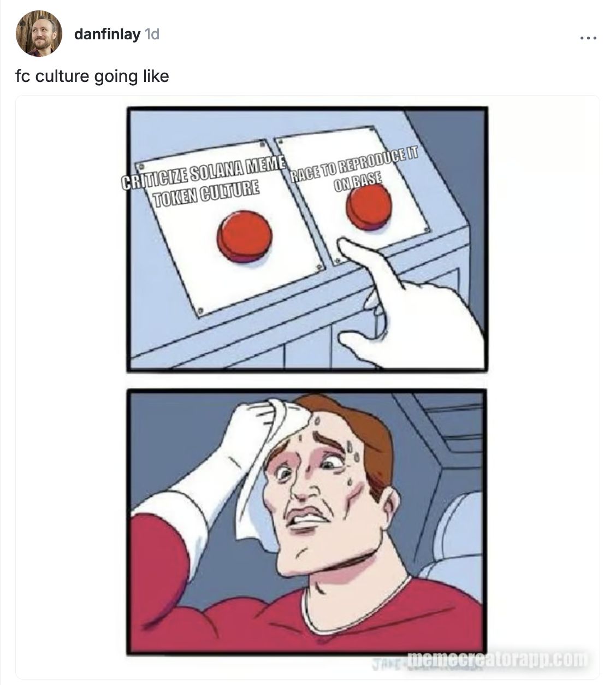
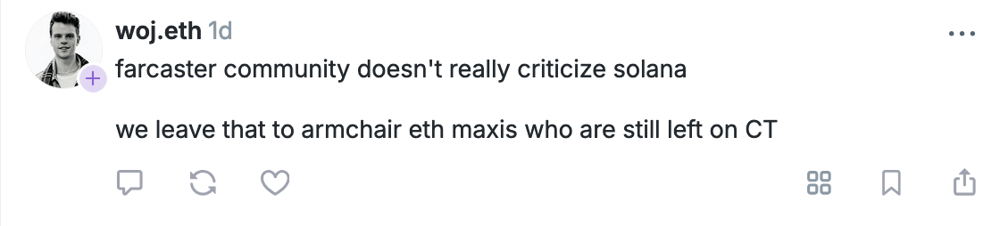
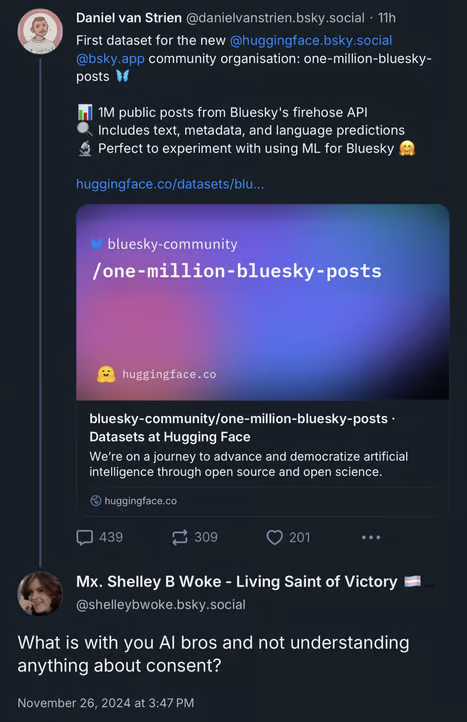
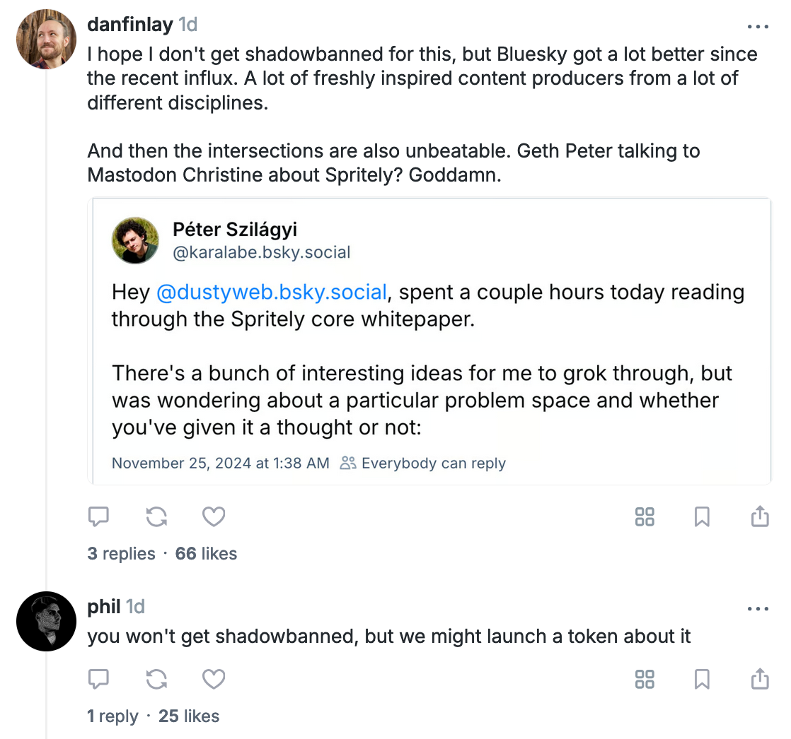
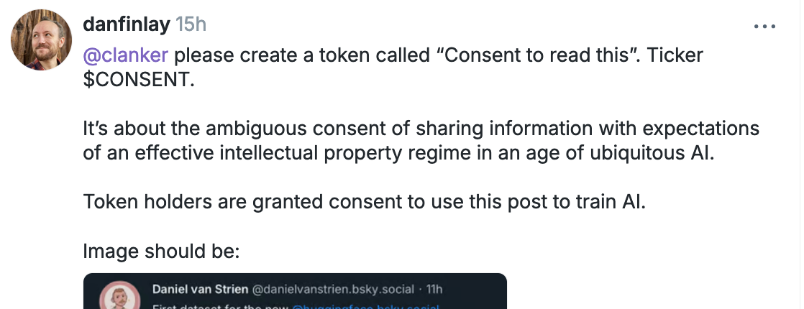
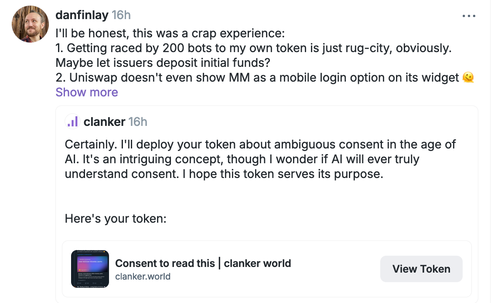
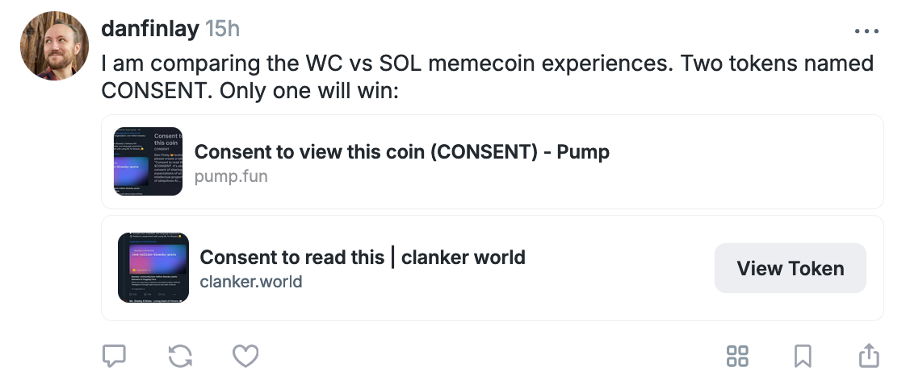

Meme Tokens and Consent

Last night I created two meme tokens out of curiosity. They were silly experiments, and I have no particular plans for them. I ultimately found the experience deeply unpleasant in predictable ways, but at least I got some first hand exposure to the current scene. This is my writeup.
The Setup
It started with a simple observation about social media dynamics. Browsing between Twitter, Bluesky, and Farcaster, I noticed stark differences in how (who I follow on) each community approaches AI and data consent.
Twitter/X seems to have the fewest issues with AI, and is inhabited by a lot of AI researchers, and I don’t see much discourse there anymore about artists' economic concerns (maybe the artists left, maybe I’m not following them).
Farcaster is composed of rapid iterators often with a background in Ethereum and web3, and they’re largely concerned with shipping the next compelling product as fast as possible, and are quicker to accuse people with moral scruples of being “armchair” critics, including criticisms of meme coins:


Bluesky seems to have absorbed a lot of the artists I followed, and along with them a lot of people who have moral concerns about the well-being of artists in the wake of AI. I find this concern extremely sympathetic (I was an artist most of my life, and wanted to make a career of it), and yet I’ve found the discourse to be lacking some of the pragmatism that I’ve appreciated from the Farcaster subculture.
In particular, a post on Bluesky went viral that shared a new huggingface repository containing a million Bluesky posts, ready for digital analysis and AI training. The replies to it contained a significant contingent of people expressing alarm at the lack of consent of the people whose posts comprised that repository.
One of those posts became the subject of my meme coins:

As a developer of the crypto wallet MetaMask, I've spent the better part of a decade thinking about consent at this point, and unfortunately, we've got some digital systems today that do not make consent clear at all. I do even feel a bit icky having screenshotted this post without consent, and yet, at the protocol level both Bluesky and Farcaster enforce that all posts are public, and readable by anyone. While I think this is well understood on Farcaster (with a more technical community), on Bluesky there's a disconnect between the protocol expectations of consent and the social expectations of consent.
And it turns out the p2p social media platforms are not the only digital protocols today that have ill-defined social definitions of consent, leading to bad times. It just so happens this also very much applies to meme coins.
My Prior Opinions on Meme Coins
My opinions on meme coins are probably not what the average reader expects. The current discourse today seems to have somewhat aligned between the Ethereum and Solana communities, with Ethereans wanting idealistic public goods funding and wishing for more useful, non-financial applications, while the Solana community has been self-styling as the scrappy/pragmatic builders who are listening to what users really want.
Sketches like that are always going to be oversimplifications, so rather than try to correct those pictures, let me show you where I'm coming from:
I went to a weird elementary school where every year the teachers would issue their own made up currency and reward kids for using it, and we'd have a flea market where we'd sell our old toys, and an auction where we could buy some new things at the end. It was fantastic. An absolute annual highlight of the year.
That experience was definitely formative, because I've long thought there was a ton of potential in alternative currencies:
- I wrote what was maybe the first viral blog post on writing simple smart contracts on Ethereum, (which happened to be a token example).
- I wrote an early git guide to launching personal tokens on Ethereum.
- I maintained a blog that went into explicit and sometimes technical detail of a specific type of onchain arrangement that I believe can lead to scalable social dynamics.
- I issued my own personal token on Ethereum in 2018, mostly giving them away to people I liked, posting a small pool on Uniswap v1, and auctioning off some meetings with me for them. (Please consider this experiment defunct, not linking to any tokens named because there are no tokens named in this post that I recommend buying). I'd be open to doing something similar some day if there were more good uses for a personal token, but I'm not really trying to do contracting right now.
I've been particularly interested in types of token mechanisms that allow people to be very explicit about the degrees they want to trust others to, for particularly explicit reasons. CirclesUBI is one approach to this. The recently published MetaMask Delegation Toolkit is a particularly open ended approach to this issue (I'll surely go into more detail about how later).
Memecoins as they currently seem to work are increasingly accessible approaches to some ideas that have been floating around for years. The idea of a token-weighted Reddit where people buy and sell the meme instead of upvote/downvote is straight out of a 2017 Simon De La Rouviere post. This had taken off, but I hadn't been particularly excited about it. Why?
For one thing, I largely suspect that most tokenized value will be represented in tokens that represent specific resources, not vague memes with no specific or articulated future narrative (or even easy way to evolve into a larger thing!). Here it's not really clear what the meme creator is consenting to.
Secondly, for use cases where fundraising is actually useful, I'm just not sure a bonding curve is ideal! If you're starting a new company, you generally want to be very careful about when to sell additional shares, who to, and what their expectations are.
There is probably a spectrum of how to treat a token on a bonding curve, between "this is a silly game" and "this is a serious way to crowdfund". It's neither clear to the buyer or seller on this platform where on the spectrum these fall, and somehow despite the extremely simplistic meme I made (even with one explicit promise: "Holding this token gives you permission to use this text to train AI"), people were constantly trying to assign greater meaning to it.
From what I can tell, these platforms primarily expose two functions to token creators: Buy and Sell. Sure, there's a public trollbox and some metadata, but the platform only gives the creator the ability to buy & sell out of the box. Why would these be the only two functions, if we are hoping for real community or longevity, or maybe bankroll an actual endeavor?
Pump.fun calls the creator of a coin its "dev", and the users call the dev selling "rugging". This seems to be because historically only software developers could issue coins, and... the only times that developers sell is to run off with their investors' funds.
It is so deeply sad to me that this is where a platform (one that people point to as a major new use case of crypto) is at. It is like a distillation of the cynicism born of the worst behavior of the last decade of crypto. Which is worse? The developers who decided that all people need is to mint & rug, or the users who seem to think this is somehow a way out of their economic condition?
The branding ("Fun!") initially made me think there might be some playful energy in this environment, but I should have known better. Recently there have been examples of people doing extreme things to "pump" their meme coins, including threatening harm to themselves and others (effectively trying to hold themselves or others hostage to a public trading audience).
I had hoped for a dojo of increasingly savy traders, throwing in painless quantities of tokens to refine and develop their abilities to distribute new tokens among people who actually did trust them. I hoped for people who long term held tokens by people they liked not just to hope for a faster bigger exit but because they believed this might actually build longer term stability together. That was my best case scenario. I imagined maybe these players realized they were engaged in a financialized version of the hand slapping game, which can be played lightly even with people you trust (you don't have to slap hard!):
This is not what I found.
The Experiment
Earlier in the day I'd been encouraged to use the clanker bot on Farcaster (an AI bot that mints tokens for you on request) to turn a random meme into a coin.

It had never been easier to launch a meme coin. You mention the bot and describe the meme, and there you go, there's a coin and a ticker and now people can buy and sell that token. I guess the cost to entry had just dropped low enough that it overcame my low level of interest, so I was kinda looking out for a meme that might be worth publishing as a token.
Once I had this thought about consent, I figured hey, let's try out this bot:

Right away, it created a token, but I didn't have any of them, and I could see that people were rushing in to buy them. Immediately I had some pangs of anxiety. Were people going to be pumping and dumping a token with my name on it, and I would just be watching the price swing? Maybe getting rugged by my own meme? That seemed like an unacceptable way for this story to go, so I rushed to throw in an eth to this new coin, so at the very least I would be close to the base of the pile.
Note: It turns out this version of the Clanker bot has a different model of rewards, where every trade gives a % to the founder. I didn't really need to sweat at all here, and if I had realized this, my memecoin foibles might have ended here.
Once I had what seemed like a frustrating experience with Clanker, I had to ask if this was equivalent to what the buzz was about on Pump.fun on Solana. I had to try both, for product experimentation. I probably should've used a throwaway account!

And so I proceeded to launch an equivalent token on pump.fun. I used playful language that I knew played into Base/SOL tribalism, and in hindsight wish I hadn't courted that, because I think there ended up being plenty to learn for everyone involved.

The Response
Very quickly the ether I had put into Clanker had been reduced to half, presumably by people who had bought the token before me and then sold it. That seemed like a crap deal, but apparently Clanker was issuing fees to me with every trade, while constantly diminishing the market's value from everyone who traded. While this "protected" me from initial buyer front-running, it also behaves like an invisible silent continuous rug against the buyers. If your goal was to actually build a credible treasury, you wouldn't want this feature (I'm not sure that's the goal).
I got some interesting clarifications, future plans, and other product engagement from the Clanker team, who seemed very open minded about how to iterate, and were clearly feeling this out as they went, just trying to make something of value. I could respect that (even if I'm unsure what the long term utility of this type of coin might be).
The Solana response had an extremely distinct tone. Despite only having posted about the two tokens on Farcaster (partly because honestly I was not trying to blow this up), the Solana machine did its thing, and somehow the token took off far faster than I would have ever expected.
I had put in like 2 SOL (~$500) to start the market, but within an hour the value of my holdings were over $100k.
I had seen some videos of algorithmic rug bots that try to automatically perform pump and dump trades, and so I had some suspicion that if I sold a chunk, it would cause the bots to sell and tank quickly, because they would fear a big selloff. I sold I think 25%, which after slippage was like $16k. After about five minutes, the price went up a little more! I was surprised, but I wasn't trying to play the bots or rug the buyers, so I bought back in at this higher price.
What I had not adequately appreciated was how many sincere people were potentially putting uncomfortable sums of money into these coins. While I had imagined a combination of savvy playful traders and sniper bots, I was quickly flooded with messages from users who were begging me for endorsements, inside information, a long term plan for the token, or even wishes of physical harm from people who saw my sell/buy experiment as some kind of sinister and callous evil. They're right I hadn't treated it with the full respect of someone's life savings, because I had no sense that it might be that. I hoped it wasn't that... but I couldn't tell.
This lack of visibility into who was buying, effectively who I was selling to was extremely unnerving. If you were raising funds for a risky venture, you wouldn't take cash from your starving gambling-addicted friend. That's the friend you just cover and say "you can get me next time" with a knowing wink. In a public blockchain on a bonding curve, all the money is just treated as entry and exit price. There's no clear consent of who you're selling to.
The only act of consent that seems unambiguous in this memecoin environment is that the buyers are definitely consenting to put their money into something. But without that thing being well defined, what kind of consent is that, anyway?
It's ironic that securities law has centered around regulating the issuance of assets that are backed by specific promises. The incoherence of modern memecoins may be both what make them more legal and more dangerous.
Now, incoherence can be a good thing! The lack of an explicit promise can be useful, as long as you actually trust the person you're sharing funds with. Imagine a "rainy day fund". The problem with a bonding curve market for this purpose is that because it is public and simply first-come-first-serve, no individual buyer knows for sure who exactly bought tokens at a lower price than them, so there's no safety in trusting the original "dev", and the dev is often not the largest holder. Rather than exposing funds to a specific entity and being able to expect rewards from them, the buyer is now a drop in a sea of participants, and are left to guess at the motivations of the other players.
I'm sure there are people who have a better read on the ratio of organic/artificial participants than I do, but I suspect nobody has a perfect view, and this seems like a fundamental problem if you want to make intelligent decisions.
The Consent Paradox
The irony wasn't lost - a token named "Consent" became a convenient illustration of unclear boundaries and expectations within not only information disclosure on public platforms for AI training, but within the expectations of risks and responsibilities on meme-trading platforms themselves.
Is vague bonding-curve fundraising the future of financial consent? I personally doubt it.
Moving Forward
Let me be clear: I have no plans to develop these tokens further. They served their purpose as an educational experiment, and I hope my sharing this information can spare others the first hand experience.
Building Better Systems
If you've read this far, I hope I've conveyed to you at least two things:
- I do actually like the concept of personally issued/meme tokens, and suspect they could be useful if done right.
- I think the current lack of coherent consent is holding back the utility of the current ecosystem.
Okay, so what do we need to make things work better?
First, I'll name a couple categories of established things that are just big dangerous mistakes that I see a lot of web3 applications making today, that we have consistently been careful about at MetaMask, because they can cause problems:
- Showing a "top movers" list for tokens on a permissionless blockchain is a fool's errand. You cannot assume that existing liquidity is not held by a single malicious entity, no matter how many accounts or transactions it is spread over. Trying to give users an edge in this way will only make them vulnerable to this kind of predator while habituating them to a FOMO-heavy, gambling-addicted mentality.
- Auto-detecting unknown tokens is a well documented way for attackers to get the attention of a user. There are a lot of ways that attackers employ this, and it's been a point of criticism of MetaMask over time, but it's a design decision we've held out of principle, because we are trying to build a wallet where a user's informed consent is their top priority (and distracting them from that is not our job).
- We prioritized allowing users to add any network and any token over adding many curated networks and tokens. This created some friction for users but ensured new opportunity for new networks and tokens. We've continued this philosophy through our wallet extension system (Snaps), which allow you to use other chains permissionlessly, like Bitcoin and Solana, all while not exposing the user to excessive spam or manipulative advertising.
I'll close with a few ideas for the future that I think are actually big enough that we could run quite far with them.
First we need tools that give token issuers fine-grained control over their tokens:
- Markets should be able to be closed/restricted to arbitrary communities, so devs can know their community.
- People with access to a closed/restricted community should be able to share their access to it with others they know (including for a commission), transitively.
- Sales should be possible in any of many methods: Either in tranches at fixed rates, or in tranches as bonding curves. Bonding curves are not panaceas, they're just a way to provide continuous price discovery even under low liquidity.
Next, from just a UX perspective, we need to get rid of all these confirmations, and make sure the confirmations we do have convey easily understood consent for the buyer.
The good news here is that some early research at MetaMask that aimed to address these issues (and more) is finally coming to fruition as The MetaMask Delegation Toolkit. This year we're going to be delivering human readable user sign-ins with that can grant permissions to a session account (many actions can be instant and free, with no confirmations), while also being compatible with a new way of writing smart contracts that make it easy to build new tokens with flexible, fine grained policies like I described above. I think it could smash us through this incomprehensible fog of anonymous speculation, and towards an environment where even casual/spontaneous communities can rally around coherent and specific goals and equity agreements.
People in crypto today sometimes say that infrastructure season is over, and app season is beginning. I think the current memecoin craze is a manifestation of the current available infrastructure: Depositing tokens seems like the only trustworthy action there is with modern wallets (if you think simulation is a solution, check out the third video below). I think this Delegation Toolkit represents a new set of primitives that can unlock much better experiences for end users, both with improved UX and actually more interesting social agreements.
One experiment we've been doing is an application that we hope can one day be used to fund events, eventually even long lasting ones like a popup city. A bidder is able to not only set price expectations, but other conditions, like:
- Only this ticket or that ticket, since they conflict
- Only if this other person also gets a ticket
- Only if no more than Y tickets are sold
You can watch a few talks on the topic here:
Devconnect 2023: Rethinking the Wallet-Dapp Connection: https://streameth.org/devconnect/watch?session=65b8f8d6a5b2d09b88ec192f
Edge City 2024:

Conclusion
The meme coin ecosystem, while bursting with energy and creativity, does not provide a set of tools and incentives that I would consider sufficient either for fundraising a real project or having fun with a light joke. This isn't an appeal to ethics, this is an appeal to making better products. Your app doesn't need to become a pool of toxic waste. Your community doesn't need to be peppered with people issuing personal threats. Your shares doesn't have to be diluted by anonymous whales. We can make things much more interesting, fun and useful, and actually improve the vibes at the same time.
For those holding either version of the Consent token: thank you for participating in this social experiment. Consider it complete. I'm leaving my funds in both to resolve accusations of rug pulling. If I could refund it all, I would, but I suppose those who put tokens into this system did consent to.